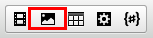
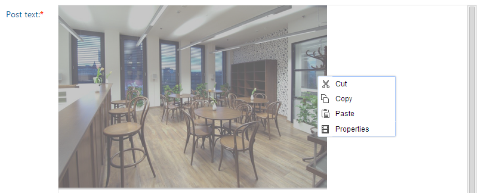
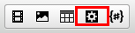
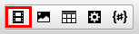
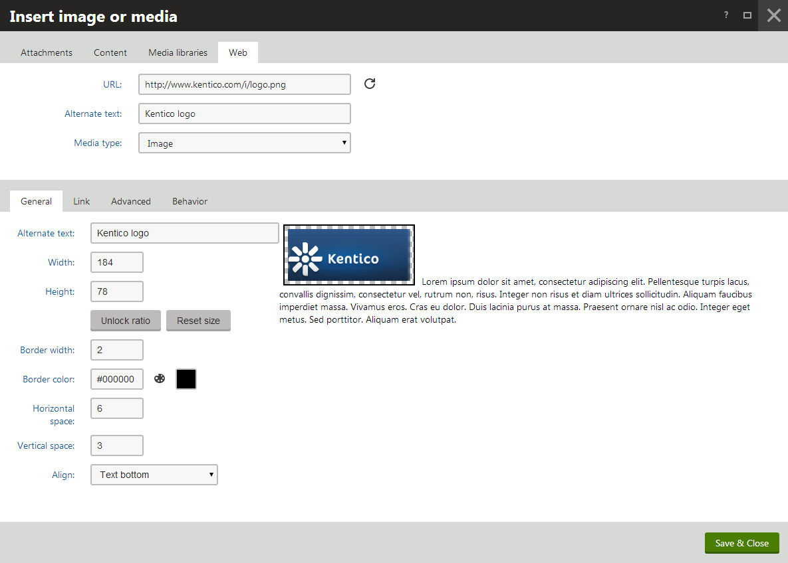

Inserting media content using the editor
You can insert image, video and audio files from various sources using the editor toolbar. The toolbar allows you to:
Insert media stored on your computer - choose a media file directly from your computer .
Insert YouTube videos - videos uploaded to YouTube.
Insert media from the web - for example, an image or a video stored on a different website.
Insert media stored in Kentico - media attached to the page, stored in the content tree or in a media library.
Inserting media stored on your computer
With your mouse, click where you want to insert the media.
On the editor toolbar, click on the Quickly insert media button. A dialog window opens.

Choose the file that you want to insert and click on Open. The system attaches the file to the page and places it. If an error message appears showing that you cannot upload files with a specific extension, you may need to contact your administrator to update the list of file extensions allowed by the system.
Optional stepsModify the image properties by right-clicking the image with your mouse and choosing Properties. A dialog window opens.

Adjust the properties based on the media type that you are inserting.
Click on Insert. The system places the modified image.
Inserting YouTube videos
With your mouse, click where in a text area you want to place the YouTube video.
In the editor toolbar, click on the Insert/Edit widget button. A Select widget dialog appears.

Select the YouTube video widget and click Select. A Widget properties (YouTube video) dialog opens.
Copy the URL of the video into the URL field.
Set the default Width and Height of the widow.
Click the Save & Close button. The system places the video.
Save the page you are editing.
Inserting media from the web
With your mouse, click where you want to insert the media.
On the editor toolbar, click on the Insert/Edit image or media button. An Insert image or media dialog window opens.

Switch to the Web tab.
Enter the URL of the resource into the URL field.
Try the automatic file type detection using the Refresh () button. In case the file type cannot be detected, use the Media type drop-down list.
(Optional) Adjust the properties based on the media type that you are inserting.
(Optional) Preview how the media file looks on the page with the properties that you applied to it.

Click Insert. The system places the media file.
Save the page you are editing.
Inserting media stored in Kentico
With your mouse, click where you want to insert the media.
On the editor toolbar, click on the Insert/Edit image or media button. An Insert image or media dialog window opens.
Depe nding on where the file that you want to insert is stored, switch to one of the following tabs:
Attachments tab - for files attached directly to the page you are editing.
Content tab - for files stored in the content tree.
Media libraries tab - for files stored in media libraries.
Select ( ) the file that you want to insert.
(Optional) Adjust the properties based on the media type that you are inserting.
Click on Insert . The system places the media file.
Save the page you are editing.
Properties of media content inserted using the editor
When inserting specific files using the editor, you may want to fill in certain advanced properties. The properties vary based on the type of file that you are inserting:
Image properties
General
URL - URL of the attached image.
Alternate text - the text displayed when the image is not loaded correctly.
Width, Height - the width and height of the displayed image; in pixels.
Aspect ratio can be locked, which makes the second dimension recalculated automatically when you change one dimension, while the ratio between the two dimensions is kept.
If unlocked, dimensions can be entered manually into both fields, without the ratio being kept.
You can also reload the default dimensions using the Reset size icon.
Border width - the width of the border around the displayed image.
Border color - the color of the border around the image; has no effect when border width is not set.
Horizontal space - horizontal space between the image and the surrounding text.
Vertical space - vertical space between the image and the surrounding text.
Align - image alignment.
Link
URL - if set, the image will become a link to the resource defined by the entered URL. Settings on the Behavior tab are overridden.
Target - the destination where the linked resource should be displayed when the image is clicked.
Advanced
ID - the identifier of the image HTML element.
Tooltip - the text displayed when the mouse cursor is placed over the image.
Class - the image element CSS class.
Style - image element additional styles.
Behavior
None - the image is inserted as a standard image. When the image is clicked, no action is performed.
Open full size in the same window - the image will become a link. When the image is clicked, its full size is displayed in the same window.
Open full size in a new window - the image will become a link. When the image is clicked, its full size is displayed in a new window.
Audio and video properties
When inserting both audio and video, the following properties can be set:
URL - URL of the attached audio/video file.
Width, Height - the width and height of the media player; 300 x 200 px is used by default.
Aspect ratio can be locked, which makes the second dimension recalculated automatically when you change one dimension, while the ratio between the two dimensions is kept.
If unlocked, dimensions can be entered manually into both fields, without the ratio being kept.
You can also reload the default dimensions using the Reset size icon.
Autoplay - indicates if playback starts automatically when the page is loaded.
Loop - indicates if playback is performed repeatedly in a loop.
Show controls - indicates if playback controls (play, stop, fast forward, ...) are displayed. In some browsers, the controls may not be displayed if the player size is too small even if this option is enabled.
Audio and video is inserted into the output code as the Media inline control. The output code looks like the following code sample:
<object codetype="CMSInlineControl" height="200" type="Media" width="300"><param name="ext" value=".webm" /><param name="cms_type" value="audiovideo" /><param name="url" value="~/getattachment/Sample.webm.aspx" /></object>